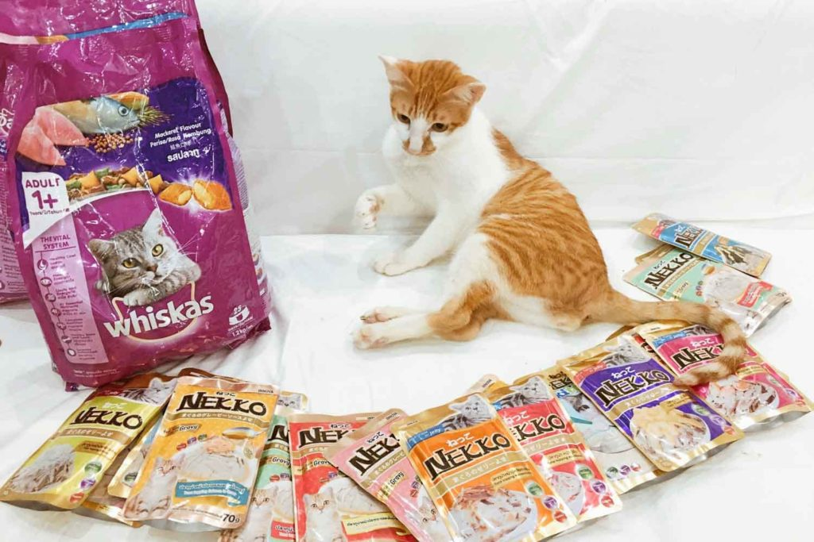

Tổng quan
Mèo là loài ăn thịt bắt buộc - điều này có nghĩa là mèo nhà cần chế độ ăn có protein động vật để giữ sức khỏe. Một lý do yêu cầu protein động vật là vì mèo cần taurine – một loại axit amin thiết yếu có trong thịt tự nhiên mà cơ thể không thể tự tổng hợp được. Một lý do khác để cần protein là mèo, không giống như hầu hết các loài động vật khác, sử dụng protein làm nguồn năng lượng chính. Động vật ăn thịt không bắt buộc (như con người) sử dụng carbohydrate làm nguồn năng lượng chính.Có 6 chất dinh dưỡng quan trọng cho mèo:
- Nước
- Chất đạm
- Mập
- Carbohydrate
- Vitamin
- Khoáng sản
Nước
Nước là chất dinh dưỡng quan trọng nhất; một con vật có thể tồn tại lâu hơn nếu không có thức ăn hơn là không có nước. Mất nước trên 11% có thể dẫn đến cái chết của động vật. Nước được đưa vào cơ thể thông qua thức ăn, nước uống và quá trình tiêu hóa.Chất đạm
Protein trong chế độ ăn của mèo cần thiết cho sự tăng trưởng, sửa chữa và cung cấp năng lượng. Lợn, bò, cừu, cá, thỏ và một số động vật thực phẩm khác là nguồn thịt điển hình cho thức ăn cho mèo. Các mô cơ bao gồm phần lớn là protein. Mèo con sẽ cần một chế độ ăn giàu protein để hỗ trợ tăng trưởng thêm. Mèo cũng cần protein để sửa chữa các tế bào bị hư hỏng, ví dụ như vết thương, phẫu thuật, bầm tím. Do đó, một con mèo bị thương cũng có thể cần lượng protein tăng nhẹ.Carbohydrate
Carbohydrate được sử dụng như một nguồn năng lượng và bổ sung số lượng lớn vào chế độ ăn uống, tuy nhiên, chúng quan trọng đối với động vật ăn cỏ hơn là động vật ăn thịt. Carbohydrate thức ăn cho vật nuôi thường có nguồn gốc từ các loại ngũ cốc như gạo, lúa mì, ngô, lúa mạch và yến mạch. Carbohydrate dường như không có chức năng hoặc một phần chính trong chế độ ăn của mèo. Con mèo sở hữu một quá trình sinh hóa đã được sửa đổi, trong đó protein là chất nền năng lượng chính.Mập
Chất béo rất cần thiết cho:
- Hấp thu các vitamin tan trong chất béo
- Duy trì màng tế bào, bao gồm cả bảo vệ
- Hoạt động của hệ thần kinh
- Cách nhiệt và kiểm soát nhiệt độ
- Năng lượng
Lipid
Chất béo và dầu đều là lipid. Động vật có chất béo trong cơ thể nên khi mèo ăn động vật khác, chúng cũng tiêu thụ chất béo đó. Thực vật có chứa dầu trong hạt của chúng (ví dụ như hoa hướng dương), tuy nhiên, ở bất kỳ mức độ nào, lipid thực vật không nên có trong chế độ ăn của mèo. Chức năng của lipid trong chế độ ăn uống là cung cấp cho cơ thể các phương tiện để tự cách nhiệt, xây dựng sự bảo vệ cho các cơ quan quan trọng, như một chất dự trữ năng lượng lâu dài và là phương tiện để lưu trữ một số vitamin.Khoáng sản
Khoáng chất được yêu cầu với số lượng rất nhỏ để giúp điều chỉnh các chức năng cơ thể như phát triển và duy trì các mô mềm và xương, chữa bệnh, hydrat hóa, điều hòa hormone và hỗ trợ lưu lượng oxy trong máu. Khoáng chất có thể được tìm thấy tự nhiên thông qua các thành phần trong thức ăn cho vật nuôi hoặc chúng có thể được tổng hợp và bổ sung vào thức ăn để đáp ứng nhu cầu hàng ngày. Các bộ phận của thức ăn cho mèo sẽ chứa ít nhiều nguyên tố khoáng. Ví dụ, gan chứa một lượng lớn chất sắt và xương xay chứa một lượng lớn canxi cũng như phốt pho. Các sản phẩm sữa cũng chứa một lượng lớn canxi. Canxi rất quan trọng đối với mèo con đang phát triển để hình thành xương, nhưng mèo không dung nạp lactose nên không thể đưa sữa vào chế độ ăn. Các sản phẩm thực vật cũng chứa một số nguyên tố khoáng chất nhất định, ví dụ như hạt ngũ cốc, chất thực vật có màu xanh đậm, cám và hạt dầu là những ví dụ về nguồn cung cấp sắt, magie, đồng và mangan. Nấm men có chứa kẽm, mangan và magiê cũng như các vitamin hoàn chỉnh. Điều quan trọng cần lưu ý là khoáng chất cần thiết trong chế độ ăn của mèo với số lượng cụ thể chứ không phải “càng nhiều càng tốt”. Tất cả các nguyên tố khoáng sẽ gây ra phản ứng độc hại nếu được cung cấp với số lượng quá lớn.Vitamin
Hệ thống cơ thể cần vitamin để duy trì sự tăng trưởng và hoạt động. Cũng như khoáng chất, chúng được yêu cầu với số lượng cụ thể và quá nhiều một loại vitamin có thể gây ra phản ứng độc hại . Các vitamin tan trong chất béo (A, D, E, & K) được lưu trữ trong các mô mỡ và gan của cơ thể, các vitamin tan trong nước (B & C) được hòa tan trong nước/chất lỏng của cơ thể và có thể được thải ra khỏi hệ thống một cách thường xuyên. cơ bản, do đó họ yêu cầu một lượng tiêu thụ hàng ngày.Chất xơ
Chất xơ thường khó tiêu; tuy nhiên, nó rất quan trọng đối với chế độ ăn của mèo vì nó làm tăng khối lượng phân, hấp thụ nước và giữ cho đường tiêu hóa khỏe mạnh bằng cách cho phép vi khuẩn đường ruột khỏe mạnh lên men. Quá ít chất xơ và dư thừa carbohydrate hoặc chất béo sẽ ức chế vi khuẩn đường ruột khỏe mạnh bằng cách tạo điều kiện cho vi khuẩn có hại phát triển. Hành động tạo khối cũng làm chậm quá trình di chuyển của thực phẩm qua ruột. Bằng cách làm chậm thời gian đi qua, cả ruột non và ruột già đều có thể hấp thụ nhiều chất dinh dưỡng hơn từ bữa ăn. Phân lớn cho phép chuyển động dễ dàng được thông qua. Nếu lượng chất xơ bị hạn chế dưới mức cần thiết, mèo sẽ bị táo bón và rất khó chịu. Bột củ cải và cám gạo là những ví dụ về chất xơ được thêm vào thức ăn cho mèo.Vấn đề dinh dưỡng
Thức ăn cho mèo tự làm là nguyên nhân khiến mèo bị thiếu hụt chất dinh dưỡng, vì sự cân bằng dinh dưỡng sẽ không chính xác. Các vấn đề về dinh dưỡng khó xảy ra ở mèo được cho ăn một chế độ ăn thương mại hoàn chỉnh.Các vấn đề về dinh dưỡng có thể phát sinh do:
- Tiếp nhận chế độ ăn uống sai lầm
- Một căn bệnh đang làm giảm lượng chất dinh dưỡng
- Chán ăn vì nhiều lý do (vấn đề về răng miệng, bệnh tật, tắc nghẽn đường ruột, v.v.)
BÌNH LUẬN cho Paws for Compassion để giành được một phần trong khoản trợ cấp 500.000 USD. Tất cả bạn phải làm là bỏ phiếu!
Mỗi đô la đều được tính là một phiếu bầu để bạn có thể quyên góp và bỏ phiếu!